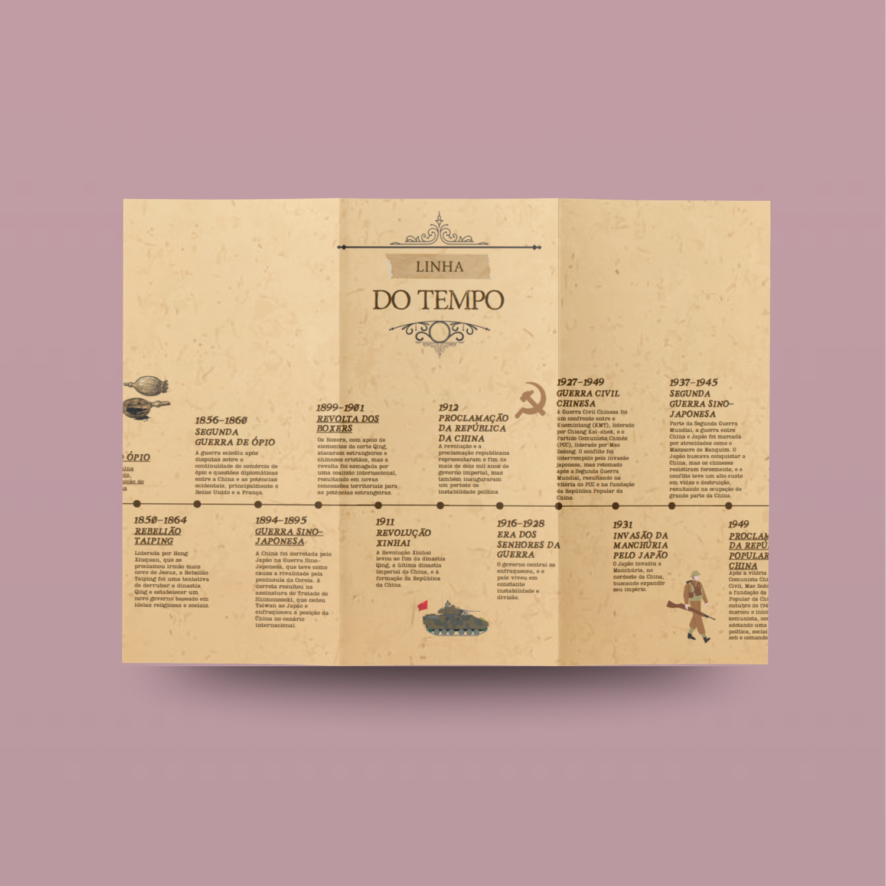
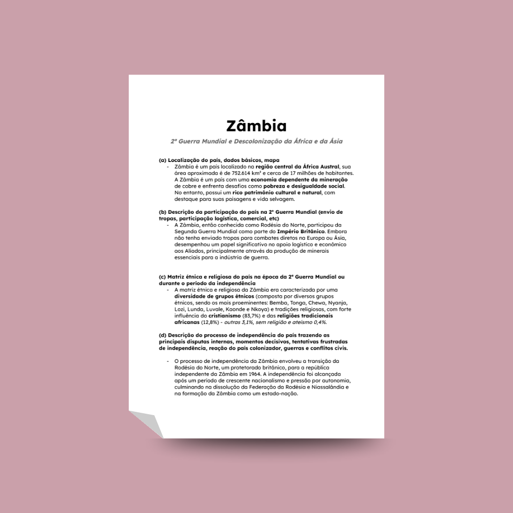
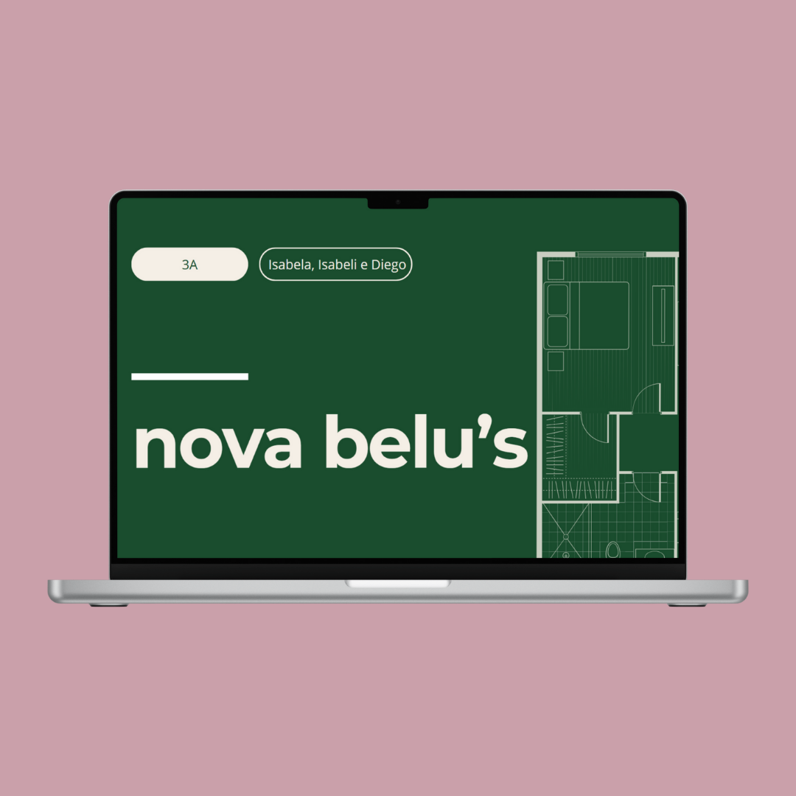

Criamos uma linha do tempo interativa, utilizando ferramentas digitais, com os principais eventos que afetaram a China entre 1839 (1ª Guerra do Ópio) e 1949 (proclamação da República Popular da China).
Teve como objetivo criar uma apresentação sobre um país (escolhemos Cuba) a partir do modelo em anexo. O importante foi conseguir dados confiáveis e atualizados.
A atividade consistia em relacionar o termo "autoritarismo" com a ficção cinematográfica. Nosso grupo decidiu utilizar a série de TV "Os Simpsons", o que permitiu a compreensão de forma crítica e criativa as relações de poder e características de um líder autoritário.

O trabalho envolvia analisar criticamente a descolonização de um país da Ásia ou da África, destacando como a Segunda Guerra Mundial acelerou o processo de independência no pós-guerra. Fiquei muito satisfeito com a minha pesquisa e com o trabalho que produzi.
O objetivo foi criar um carrossel de imagens para uma rede social, com seis fotos e textos curtos, com o propósito de promover a conscientização sobre o Holocausto e combater notícias falsas. Achei a atividade muito interessante e fiquei satisfeito com o resultado.

A tarefa central dessa atividade consistiu no planejamento integral de uma nova capital para o Brasil, abrangendo desde a sua fundamentação conceitual até a sua materialização espacial e arquitetônica.
Atuei como Carlos Lacerda, a principal testemunha de acusação. Personifiquei o célebre opositor do regime, defendendo com base em pesquisa histórica que o governo Vargas foi marcado por autoritarismo e repressão, utilizando-me de minha oratória para influenciar o júri popular contra o réu.